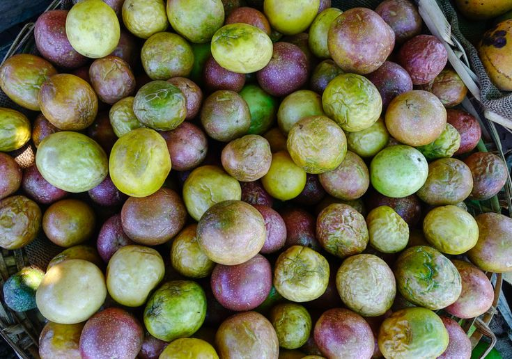

Our Global Procedure
We Train Farmers on the global farming procedure

Passion Seedlings

Passion Processing

Using advanced technology to improve passion fruit farming in the continent and Kenya at large, we ensure
that you receive more
ideas from our top-qualities creatives.
Passion fruit farming involves a series of important stages that contribute to healthy crop growth and high yields. It begins with selecting a suitable site that has well-drained, fertile soils and a favorable climate, followed by thorough land preparation including digging planting holes and adding compost. Choosing the right variety—purple, yellow, or grafted hybrids—is essential depending on the local conditions and market demand. Propagation can be done through seeds, cuttings, or grafting, with grafting offering better disease resistance. Once planted, the vines require proper spacing and support structures like trellises to climb. Regular maintenance such as weeding, pruning, watering, mulching, and fertilization helps the plants thrive. Pest and disease control is crucial, often using integrated pest management practices. The vines begin flowering around five to eight months after planting, with pollination mainly done by bees. Harvesting usually starts six to nine months after planting when fruits mature and change color. After harvesting, fruits are sorted, packed, and either sold fresh or processed into products like juice and jam for added value. Each stage, when done correctly, ensures a successful and profitable passion fruit farming venture.
Passion fruit farming begins with careful site selection and land preparation. The ideal location should have a warm tropical or subtropical climate with consistent rainfall throughout the year. The crop grows best in well-drained, deep, and fertile soils with a slightly acidic pH ranging from 5.5 to 6.5. Before planting, the land should be cleared of all weeds and unwanted vegetation. Planting holes, typically 45cm in all dimensions (width, depth, and length), should be dug and enriched with well-rotted compost or farmyard manure. This enhances soil fertility and ensures healthy root development. A well-prepared site forms the foundation for healthy vine growth and high yields.
Choosing the right variety of passion fruit is essential for successful farming. There are primarily three types: the purple passion fruit, which is suitable for cooler highland areas; the yellow passion fruit, which thrives in hotter lowland climates; and hybrid varieties, usually produced by grafting the purple scion onto yellow rootstock to combine high fruit quality with resistance to soil-borne diseases. Variety selection should consider climate conditions, disease resistance, market demand, and personal farming goals. Using high-quality and certified planting material improves plant health and productivity.
Propagation refers to the process of producing new passion fruit plants. The three main methods are seed propagation, cuttings, and grafting. Seeds are the cheapest option and commonly used, but they may produce non-uniform plants. Cuttings, usually taken from healthy mother plants, provide more uniform crops but are more labor-intensive and costly. Grafting is increasingly popular because it combines the disease resistance of yellow passion fruit rootstock with the fruit quality of purple passion fruit. Proper propagation methods ensure vigorous plants that are more likely to survive transplanting and perform well in the field.
We Train Farmers on the global farming procedure
Passion fruit farming begins with selecting the right variety based on the climate. Farmers prepare the land, plant healthy seedlings, and ensure proper watering. Trellising helps the vine grow upward, and regular pruning keeps it healthy. With pest control, pollination, and nutrient management, the vines produce sweet, rich fruits ready for harvesting and market.


Prepare fertile, well-drained soil to provide a healthy base for your passion fruit.

Use grafted seedlings or cuttings for better disease resistance and faster maturity.

Support vines with strong trellises for better growth and easier harvesting.

Fruits mature in 6–9 months and should be harvested when they change color.